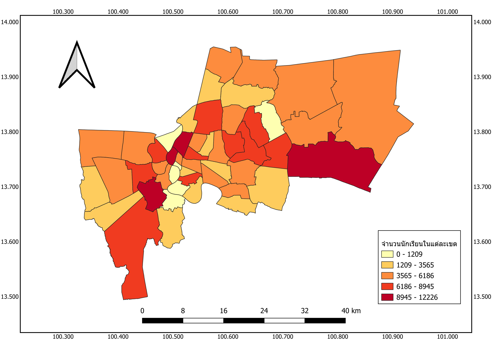
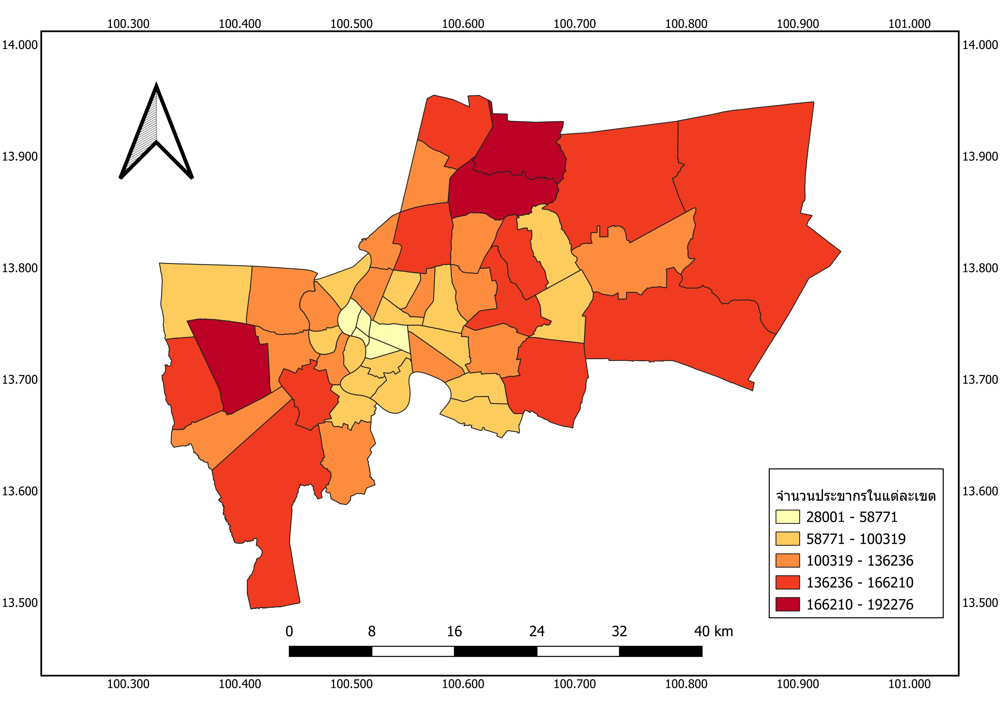
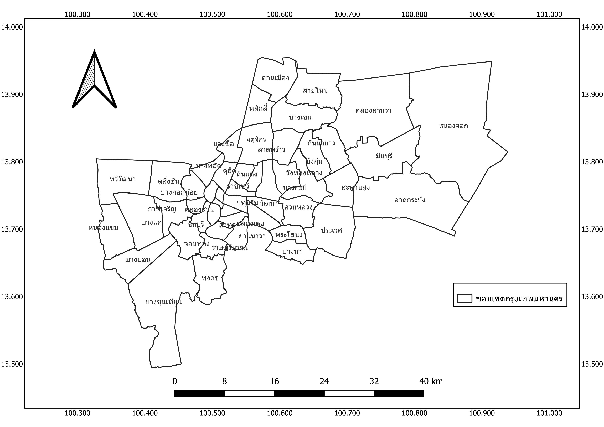

ข้อมูลโรงเรียนใน กรุงเทพมหานคร
ค้นหาโรงเรียนที่คุณต้องการด้วยระบบแผนที่อัจฉริยะ พร้อมข้อมูลที่อัปเดตตามเวลาจริง
ภาพรวมข้อมูลที่น่าสนใจ

จำนวนนักเรียนในแต่ละเขต
แสดงการกระจายตัวของจำนวนนักเรียนในแต่ละเขตของกรุงเทพมหานคร

จำนวนประชากรในแต่ละเขต
แสดงข้อมูลการกระจายตัวของประชากรในแต่ละเขตพื้นที่

ขอบเขตกรุงเทพมหานคร
แสดงแผนที่ขอบเขตการปกครองของกรุงเทพมหานคร
แผนที่ข้อมูลโรงเรียนในกรุงเทพมหานคร
ภาพรวมโรงเรียน
จำนวนโรงเรียนทั้งหมด: 0 แห่ง
โรงเรียนประถม: 0 แห่ง
โรงเรียนมัธยม: 0 แห่ง
กำลังโหลดข้อมูล...